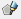
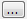

This module
implements
methods to detect patterns in image regions. Commonly, classification
algorithms are divided by the level of classification (pixel or
region), and by the interaction of the user (supervised or
unsupervised). Pixel-based
algorithms classify
individual pixels
according to their resemblance to a specific pattern. Region-based
algorithms use regions from segmented images, and classify each region
to a specific pattern. Supervised
methods uses a predefined typology,
given by the user, who supplies samples of each pattern. Unsupervised
methods detect an unknown number of patterns, according to their own
method.
The
available methods in TerraLib
are:
- Expectation-Maximization - EM,
- Spectral Angle Mapper - SAM,
- Maximum a Posteriori Probability -
MAP.
ISOSeg
This is an unsupervised and
region-based classification algorithm.
Input:
- Raster
-
Vector of polygons
-
Acceptance threshold
Expectation-Maximization
- EM
This is an unsupervised and
pixel-based classification algorithm. Expectation-Maximization (EM)
works iteratively by applying two steps: the E-step (Expectation)
and the M-step (Maximization).
Input:
- Raster
-
The value of “K”, which stands for the
number of patterns (or clusters) to find in the image.
-
The maximum number of iterations (E/M steps) to
perform if convergence is not achieved.
-
The maximum number of points used to estimate the
clusters (default = 1000).
-
A convergence threshold. When the clusters change
in a value smaller then epsilon, the convergence is achieved.
-
The previously estimated means of the clusters
(optional).
K-Means
This is an unsupervised and
pixel-based classification algorithm.
Input:
- Raster
-
The value of “K”, which stands for the
number of patterns to find in the image.
-
A convergence threshold. When the clusters move
less than this threshold, the algorithm stops.
-
Maximum number of iterations.
Spectral
Angle Mapper - SAM
This is an supervised
classification algorithm.
Input:
- Raster
- A set of ROI samples.
Maximum
a Posteriori Probability - MAP
This is
an supervised classification algorithm.
Input:
- Raster
- A set of ROI samples.
It is
accessible through:
Raster
Processing > Classification... (list
of all
raster layers will be available)
This
wizard consists of the
following steps:
Wizard Page 1 - Selection
of the layer to execute the operation (Layer Search)
- On the List
of Layers select the raster layer to apply the operation.
- Optionally use Filter By Name
field
giving part of the layer name to help find the layer in the list.
- Press Next
to go to next step or Cancel to close the
dialog.
Wizard Page 2 - Classification parameters
- Select the type of
classifier to be used.
- Select the bands to be used in the process.
- As described above, each classifier has a set of
specific attributes. For supervised classifiers
(SAM and MAP) is necessary
to use a component for the acquisition
of samples.
- Use tool to
enable the acquisition of components (samples) through the interface Raster
Navigator. This interface offers several tools (such
as zoom, color composition) to help on collecting good samples.
- Use  tool to create a region
of interest over the image that represents a homogeneous region of a
desired sample.
- Press Next
to go to next step, Back to return to the previous wizard or Cancel
to close the
dialog.
Wizard Page 3 - Output
information
- Raster Info
- First press  and inform the folder where the resulting
file will be saved.
- Name - inform
the raster name.
- Extra
Parameters - if there are some, see the details on how to inform
then here.
- Press Finish
to save the resulting contrasted raster or Back
to go to the previous wizard page.
Hint: The resulting image will be added as a new layer at the TerraView
project.